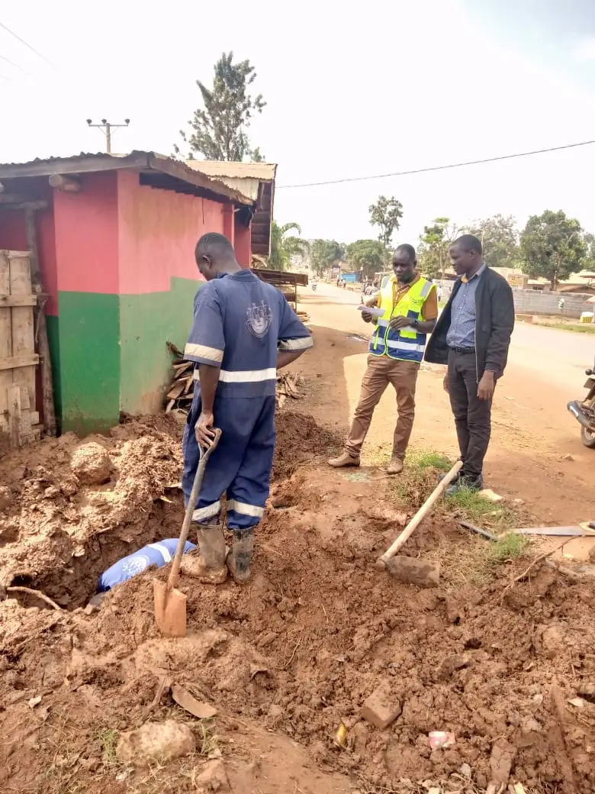

ABOUT US
Serving since 1972
NWSC was formed by Decree No. 34 in 1972 to serve the urban areas |  |
The National Water and Sewerage Corporation (NWSC) is a public utility company 100% owned by the Government of Uganda. The Corporation was established in 1972 under Decree No: 34. At its inception in 1972, the Corporation operated in three (3) major towns of Kampala, Jinja and Entebbe. These laws were revised in 1995 by the NWSC Statute and later on the statute was incorporated in the Laws of Uganda as CAP 317 (Laws of Uganda 2000). The primary aim of this was to revise the objectives, powers and structure of NWSC to enable the corporation operate and provide water & sewerage services in areas entrusted to it on a sound commercial and viable basis
VISION To be the leading customer Service Oriented utility in the world. |
MISION To sustainably and equitably provide cost effective quality water and sewerage services to the delight of all stakeholders while conserving the environment. |
VALUES *Professionalism *Reliability *Integrity *Innovation *Team Work *Excellence *Result Oriented |
|
OUR ADDRESS NATIONAL WATER & SEWERAGE CORPORATION (NWSC) Plot 3, Nakasero P.O BOX 7053 Kampala |
OUR SERVICES NWSC AREAS HOW TO PAY NEW CONNECTIONS TARRIF GUIDE WATER QUALITY SEWER SERVICES |
OTHER LINKS WATER HERALD 10 MILLION TREE PLANTING CAMPAIGN |
CONTACT US Our customer support team toll free numbers 0800200977 or 0800300977 they will help you 24/7. You can also mail us on info@nwsc.co.ug |